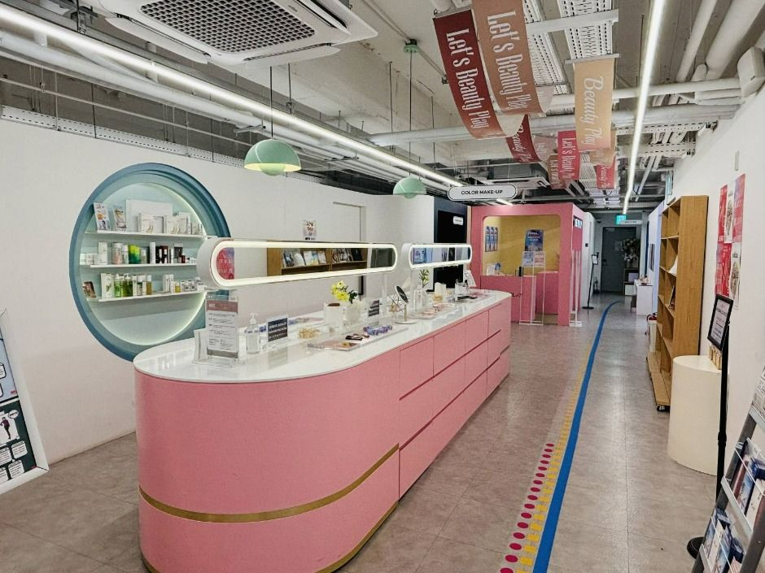
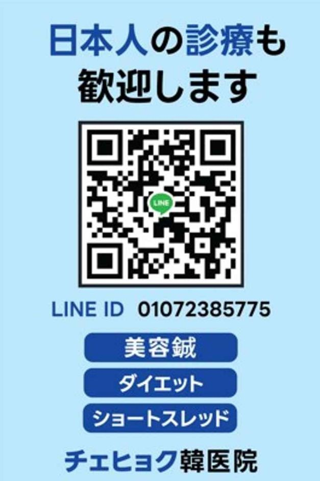

K-Beauty1–3 days
Cheongdam Glass-Skin Laser & Rejuran Guide
Laser toning, Rejuran Healer and skin boosters explained with session details & aftercare.
Compare glass-skin lasers, executive health checkups, hanbang head spas and ocean wellness — with direct clinic inquiry, downtime and recovery tips.
Source: Korea Tourism Organization TourAPI (English). Listing is informational, not an endorsement — confirm details directly with each clinic.

Laser toning, Rejuran Healer and skin boosters explained with session details & aftercare.
VIP packages, endoscopy, MRI and English reports in one day.

Herbal scalp therapy, acupuncture and tea rituals in hanok settings.
Thalasso spas, Centum clinics and beachfront recovery stays.
| Procedure | Session Time | Downtime | VAT Refund | Price / Event Quote |
|---|---|---|---|---|
| Rejuran Healer (Skin Booster) | 45–60 min | 1–2 days | 10% Eligible | Inquire for Quote → |
| Pico Laser Toning | 30–40 min | None | 10% Eligible | Inquire for Quote → |
| Executive Health Checkup | 3–4 hours | Same day | Package Rate | Inquire for Quote → |
| Hanbang Head Spa (90 min) | 90 min | None | Seasonal Promo | Inquire for Quote → |
Clinic rates and seasonal promotions vary by session customize options and package — contact clinics directly via Phone, WhatsApp, or the Promotions board for an exact quote.